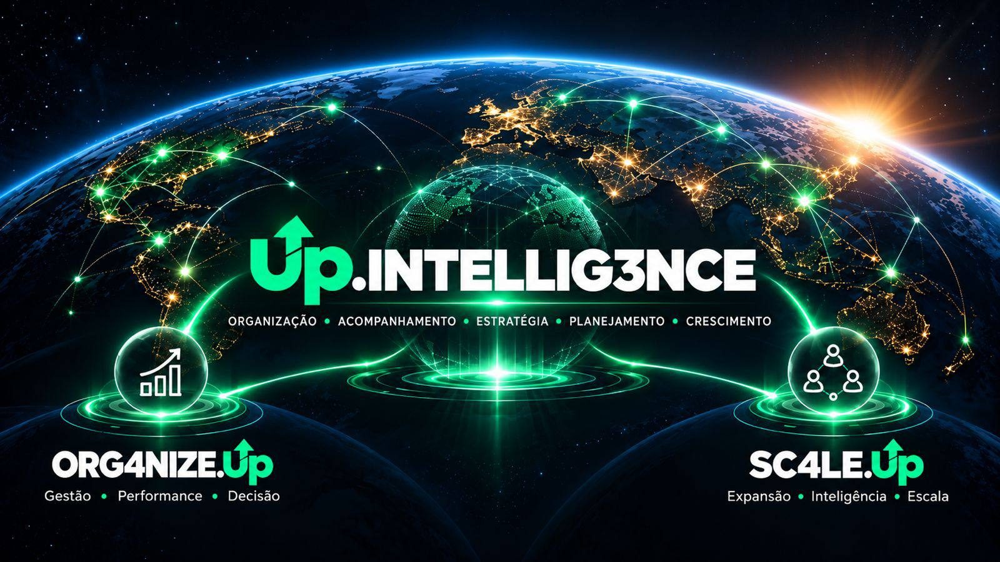

01 · GESTÃO, FINANÇAS & ROTINA
ORG4NIZE.Up
Mais clareza para organizar as finanças, a gestão e a rotina da sua empresa, eliminando a sobrecarga do empresário com processos consolidados.
Conhecer ORG4NIZE.Up

Mais de 38 anos de experiência empresarial a serviço da evolução do seu negócio.

Ao longo de quase quatro décadas, participei da construção, gestão e expansão de empresas em diferentes mercados.
Hoje, compartilho essa experiência com empresários que querem entender melhor seus negócios, fazer escolhas mais seguras e encontrar caminhos sólidos para crescer.
Organize sua empresa ou prepare o próximo passo da sua expansão com inteligência artificial.
Mais clareza para organizar as finanças, a gestão e a rotina da sua empresa, eliminando a sobrecarga do empresário com processos consolidados.
Conhecer ORG4NIZE.Up
Mais informação e critério para decidir onde, como e com quem expandir sua rede, utilizando geointeligência, perfil de operadores e viabilidade econômica.
Conhecer SC4LE.UpEscolha o dossiê que acompanha o seu momento.
Entenda pontos importantes antes de investir em uma franquia e aprenda a auditar a COF.
Conhecer o Dossiê Para quem quer expandirConheça o caminho de quem quer formatar e expandir uma marca por franquias de modo sustentável.
Conhecer o DossiêConforme você avança, a complexidade se condensa em um único direcionamento claro:
Conheça experiências de empresários que fizeram parte dessa trajetória.
Conte um pouco sobre seus desafios e objetivos para encontrarmos o próximo passo.